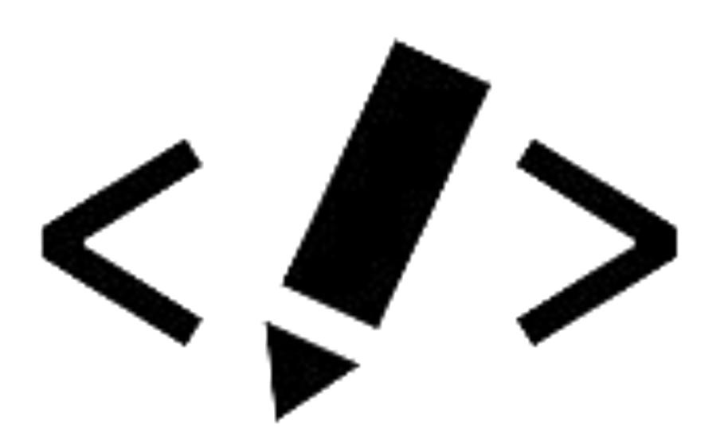

About Me
I'm FloatFusion, your dedicated CSS and HTML web developer hailing from the picturesque landscapes of Chitral, Pakistan.
Who Is Float Fusion?
I am the alchemist of the digital realm, blending the artistry of design with the precision of code. With a profound love for clean, elegant aesthetics and a knack for turning ideas into interactive wonders, I bring websites to life with the magic of CSS and HTML.
Why Work with FloatFusion?
Collaborative Spirit:
I believe in a collaborative approach, working closely with clients to understand their vision and translating it into a digital reality.
Attention to Detail:
Precision is my hallmark. Every project undergoes a thorough quality check to guarantee a flawless end product.
Innovation at Heart:
The digital landscape is ever-evolving, and I stay at the forefront of industry trends, incorporating the latest innovations into every project.
Let's Create Together:
Whether you're a startup dreaming of an online presence or an established business seeking a digital facelift, FloatFusion is here to turn your vision into a digital masterpiece. Let's embark on a journey where creativity meets code, and your web presence becomes a work of art.


Crafting Experiences, One Pixel at a Time.
- FloatFusion